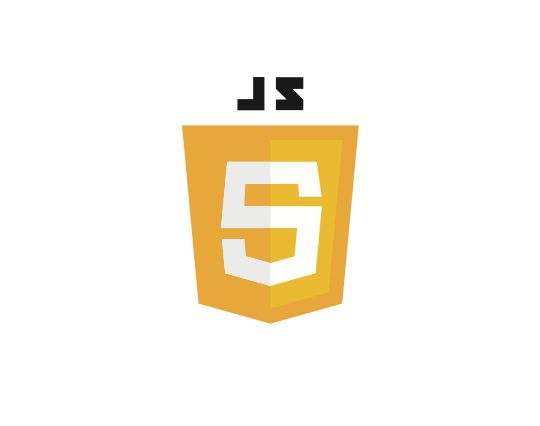
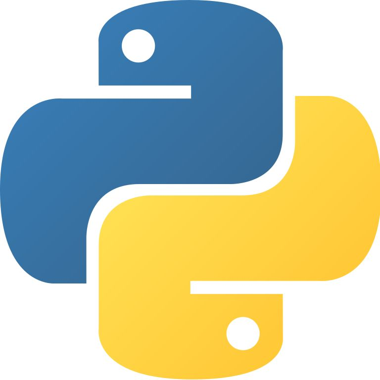

JavaScript adalah bahasa pemrograman yang banyak digunakan untuk membuat website menjadi interaktif dan dinamis. JavaScript dapat membuat halaman website memberikan respons terhadap tindakan pengguna, seperti ketika tombol diklik, formulir diisi, menu dibuka, atau data diperbarui tanpa harus memuat ulang seluruh halaman. JavaScript dapat digunakan bersama HTML dan CSS untuk membuat website yang lebih menarik dan memiliki berbagai fitur interaktif. Selain untuk website, JavaScript juga dapat digunakan untuk membuat aplikasi dan berbagai jenis program lainnya. Contoh penggunaan: membuat tombol interaktif, animasi, kalkulator online, validasi formulir, menu dropdown, dan fitur pada aplikasi web.
HTML adalah bahasa markup yang digunakan untuk membuat struktur dasar sebuah halaman website. HTML berfungsi untuk menentukan berbagai elemen yang terdapat dalam website, seperti judul, paragraf, gambar, tabel, tombol, link, formulir, dan daftar. HTML menggunakan tag untuk memberi tahu browser bagaimana suatu bagian dari halaman harus ditampilkan. HTML biasanya menjadi dasar utama sebelum website diberi tampilan menggunakan CSS dan fungsi interaktif menggunakan JavaScript. Contoh penggunaan: membuat halaman profil, halaman berita, halaman toko online, dan halaman utama sebuah website.
CSS adalah bahasa yang digunakan untuk mengatur dan memperindah tampilan sebuah website. CSS dapat digunakan untuk mengatur warna, ukuran dan jenis tulisan, ukuran gambar, jarak antar elemen, posisi elemen, background, border, hingga membuat tampilan website responsif pada berbagai ukuran layar. Dengan CSS, website yang awalnya hanya memiliki struktur dari HTML dapat dibuat menjadi lebih rapi, menarik, dan mudah digunakan. Contoh penggunaan: mengubah warna tombol, membuat menu navigasi, mengatur layout website, dan membuat desain halaman menjadi responsif.

Python adalah bahasa pemrograman tingkat tinggi yang dikenal karena sintaksnya relatif sederhana dan mudah dipahami. Python dapat digunakan untuk membuat berbagai jenis program, mulai dari aplikasi sederhana hingga proyek yang kompleks. Python banyak digunakan dalam pengembangan website, pengolahan data, kecerdasan buatan (AI), machine learning, otomatisasi pekerjaan, dan pembuatan aplikasi. Python memiliki banyak library dan framework yang membantu programmer dalam membuat program dengan lebih cepat dan efisien. Contoh penggunaan: membuat program perhitungan, aplikasi sederhana, sistem website, analisis data, dan program kecerdasan buatan.